Плагин Auto Fx (часть 1)
Плагин Auto Fx
Я решил написать серию уроков о плагине для Photo-Paint – Auto Fx. Т. к. моя фантазия как-то иссякла и сейчас нет времени для написания уроков на другие темы, то я решил ознакомить пользователей Photo-Paint с этим замечательным плагином.
Эта серия уроков будет полезна начинающим пользователям, пользователям, которые еще не знакомы с этим плагином, а также тем, для кого в силу разных причин английский язык сродни «китайской грамоте».
Впервые этот плагин попал в мои руки в составе CorelDraw 7. Тогда этот плагин был более чем скромным и никак меня не впечатлил. И вот спустя много лет я с подачи статьи Foster D. Coburn III-го натолкнулся на этот плагин (кстати желающие могут подписаться на его газету «Graphics Unleashed Weekly Newsletter», правда она исключительно на английском). И к своему удивлению обнаружил, что этот плагин из «гадкого утенка» превратился в мощный продукт. Поэтому охватить все его возможности в одном уроке просто невозможно и я решил сделать несколько уроков на эту тему.
Сразу оговорюсь, что этот плагин «заточен» под Фотошоп. Но и с Photo-Paint он прекрасно работает.
Обилие эффектов и заготовок в этом плагине удовлетворит практически все ваши желания, а возможность создавать и сохранять свои, только расширяет спектр его возможностей. К тому же всем понятно, что плагин предназначен для выполнения рутинной работы более удобным способом, либо позволяет создавать эффекты, которых в программе нет или нужно затратить немало усилий для их получения.
Прежде чем мы двинемся дальше, скажу несколько предварительных замечаний.
Технические подробности:
Здесь надо сразу сказать, в каких условиях тестировался плагин. Плагин был установлен в среде Windows 7 Ultimate SP1 (64-bit). Также была проведена проверка на его совместимость с Photo-Paint Х5 (v. 15.0.0.486) и Photo-Paint Х6 (64-bit) (v. 16.3.0.1114).
Здесь понятное дело, что Photo-Paint Х5 является 32-разрядным приложением, т. к. 64-разрядной версии CorelDRAWGraphicsSuiteX5 просто не существует в природе.
Что касается самого плагина Auto Fx, то он существует в двух вариантах, 32- и 64-разрядные версии.
Естественно, что я ставил 64-разрядную версию плагина, т. к. ОС 64-разрядная. Однако выяснилось, что сей плагин все равно «заточен» под 32-разрядную систему, а его 64-разрядная разновидность скорее всего тот же 32-разрядный вариант, но убраны некоторые баги, которые были при его работе с 64- разрядной операционной системой. Почему я сделал такой вывод? Потому что по умолчанию 64- разрядная версия плагина устанавливается в папку C:\Program Files (x86)\Auto FX Software.
К техническим подробностям пожалуй следует отнести и тот факт, что плагин работает, как в «режиме» Standalone (т. е. как отдельное приложение), так и в виде плагина, встраиваясь в хост-приложение.
Однако такое встраивание не происходит автоматически. Для добавления его в список плагинов Photo-Paint, необходимо скопировать файлы .8bf в папки:
для Photo-Paint Х6 (64-bit) – C:\Program Files\Corel\CorelDRAW Graphics Suite X6\Plugins64;
для Photo-Paint Х5 – C:\Program Files (x86)\Corel\CorelDRAW Graphics Suite X5\Plugins.
В названиях файлов .8bf указана разрядность плагина, например, Mystical2_Plugin_64.8bf, что указывает на то, что плагин 64-разрядный.
Теперь плохие новости… Сей плагин с Photo-Paint Х6 (64-bit) не сдружился. Хотя он встроился в Photo-Paint Х6 и даже запускался, но после выполнения действий, Photo-Paint Х6 (64-bit) намертво подвисал. После 1-2 минут ожидания, я просто через Диспетчер задач Windows останавливал Photo-Paint. Причина мне не понятна, то ли виновата именно версия Photo-Paint (т. е. слишком новая), то ли разрядность, то ли еще что-то. Еще одна плохая новость – русской версии плагина нет.
Теперь хорошие новости… С Photo-Paint Х5 у плагина проявилась «любовь с первой ложки». Все прекрасно работает, несмотря на то, что сам Windows – 64-bit.
Теперь, после краткого описания технической стороны вопроса, приступим к изучению плагина, на примере его работы с Photo-Paint Х5. При работе с Photo-Paint Х6 (64-bit) придется запускать плагин, как отдельное приложение.
Еще один момент, который я упустил – этот плагин на самом деле является пакетом плагинов, наподобие KPT Effects.
Первое знакомство с плагином
После открытия изображения, плагин запускается, как и все прочие плагины, командой Effects > Auto FX Software (рис. 1).
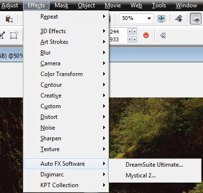
Из рисунка 1 видно, что у меня установлено 2 пакета этого плагина: DreamSuite и Mystical 2. Набор Photo-Graphic Edges я не устанавливал, поэтому в этой серии уроков я его рассматривать не буду.
Начнем рассмотрение плагина с набора Mystical 2.
Набор плагинов Mystical 2
После вызова плагина (рис. 2), появится главное окно плагина (рис. 3).
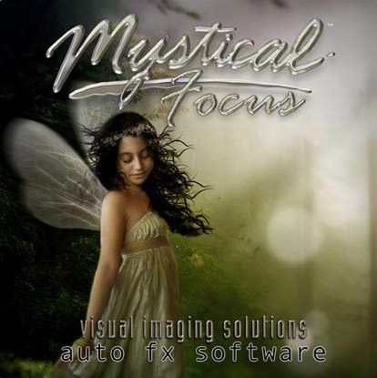
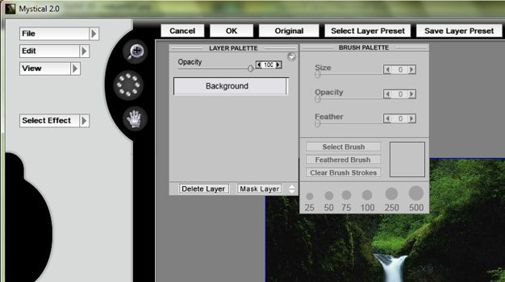
Как видно на рис. 3, начальный экран плагина довольно простой и интуитивно понятный. В верхней левой части окна имеется всего три пункта меню: File (Файл); Edit (Правка) и View (Вид). Чтобы добраться до пунктов каждого меню, достаточно щелкнуть на треугольнике в правой части меню (рис. 4).
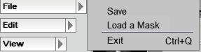
На рис. 4 представлено меню File (Файл). Как видите, в этом меню небольшой набор команд:
• Save (Сохранить) – позволяет сохранить файл на жесткий диск в форматах: .jpg; .bmp; .png; .psd; .tif.
• Load a Mask (Загрузить маску) – позволяет загрузить сохраненный на диске файл маски.
• Exit (Выход) – закрывает плагин.
При использовании плагина, как самостоятельного приложения, в меню File (Файл) появляется еще одна команда – Open (Открыть), которой нет в случае использования плагина внутри хост-приложения.
На рис. 5 показано меню Edit (Правка).
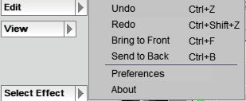
Состав команд меню Edit (Правка) также невелик:
• Undo (Отмена) – отменяет последнее действие
• Redo (Вернуть) – отменяет действие последней команды Undo (Отмена)
• Команды Bring to Front (Переместить вверх) и Bring to Back (Переместить вниз) позволяют менять порядок (менять местами) объекты. Эти команды могут выполняться только с теми эффектами, которые позволяют клонировать экранные объекты.
• Preferences (Настройки) – данная команда вызывает одноименное диалоговое окно (рис. 6).
• About (О программе) – вызывает окно показанное на рис. 2, а также данные об имени, названии компании и серийном номере продукта.
Давайте рассмотрим диалоговое окно Preferences (Настройки) (рис. 6).
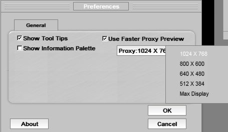
Флажок Show Tool Tips (Показывать подсказки), отвечает за включение или отключение экранных подсказок к инструментам. Замечу, что в плагине Auto Fx эти подсказки довольно подробные. Но, как я сказал, для тех пользователей, которые не дружат с английским языком, эти подсказки ровным счетом ничего не значат. В этой ситуации его можно сбросить за ненадобностью. Подсказка появляется через несколько секунд после наведения на любой элемент управления (рис. 7).
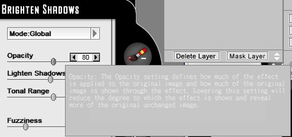
Тут, на мой взгляд, разработчики дали маху. Подсказка выглядит настолько бледно, что надо иметь нормальное (желательно отличное) зрение, чтобы различить белый текст подсказки на светло-сером фоне. Плюс заключается в том, что подсказка не исчезает, если не делать движений мышью и можно не спеша прочесть текст подсказки.
Флажок Show Information Palette (Показывать панель сведений) – соответственно вызывает (или отключает) панель сведений (рис. 8).
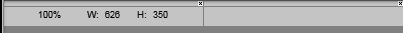
Сия панель достаточно мелкая и вы ее можете не увидеть. Дело в том, что по умолчанию два окна – Layer Palette (Палитра слоев) и Brush Palette (Палитра кистей), расположены вместе в верхней части окна, а панель Information Palette (Панель сведений) появляется под этими двумя окнами и не видна. Поэтому нужно одно окно (или оба) передвинуть в сторону. Панель Information Palette (Панель сведений) отображает текущий масштаб изображения, а также физические размеры. Скорее всего, вам такая информация во время работы с плагином не понадобится. Поэтому этот флажок по умолчанию сброшен.
Флажок Use Faster Proxy Preview (Использовать быстрый предварительный просмотр) с выпадающим меню Proxy: (рис. 6 и 9).
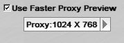
Данный флажок и выпадающее меню служат только для того, чтобы выбрать разрешение предварительного просмотра. Естественно, что большее разрешение вызовет более медленную прорисовку изображения после применения эффекта. Поэтому большие значения следует выбирать при наличии мощной видеокарты. Выбор разрешения не влияет на исходное изображение, а только лишь на предварительный просмотр в окне плагина.
На мой взгляд, неудобство использования выпадающего меню Proxy: заключается в том, что для выбора разрешения из списка, необходимо удерживать нажатой левую кнопку мыши и только после наведения указателя мыши на нужный вариант, отпустить кнопку мыши.
На рисунке 10 представлено меню View (Вид).
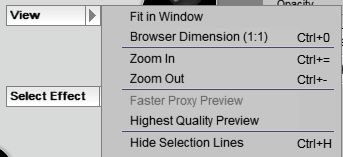
Ну, здесь все совсем просто. Все команды этого меню отвечают за масштаб изображения. Я не сильно ошибусь, если скажу, что вы редко будете заглядывать в это меню, а то и вообще забудете о его существовании. Управлять масштабом более удобно с помощью горячих клавиш: Ctrl + = (Увеличить масштаб) и Ctrl + – (Уменьшить масштаб). Пожалуй более полезной в некоторых ситуациях будет команда Hide Selections Lines (Скрыть линии выделения). По умолчанию, если вы создадите в Photo-Paint маску, то ограничивающая ее рамка будет видна и в окне плагина. Чтобы отключить или включить отображение этой рамки, выполните команду View > Hide Selections Lines (Вид > Скрыть линии выделения) или нажмите Ctrl + H.
На этом я закончу вступительную часть. Остальные элементы управления и команды мы рассмотрим по ходу изучения плагина, а также в следующих уроках.
Меню Select Effect (Выбрать эффект)
Это меню имеет двухуровневую структуру. При нажатии на треугольник в левой части меню, вы увидите три категории эффектов (рис. 11). В плагине они отсортированы по области применения или может лучше сказать по видам эффектов.
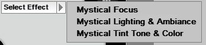
Если вы наведете указатель мыши на любую из этих трех категорий, откроется следующий уровень меню (рис. 12).
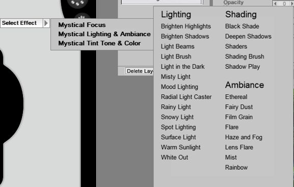
Как видно из рис. 12, в каждой категории, эффекты отсортированы по группам. Это облегчает выбор и навигацию каждого типа эффектов. Глядя на рисунок 12 становится понятным, что набор плагинов Auto Fx является неисчерпаемым кладезем всевозможных эффектов.
Как я уже говорил, многое из того, что предлагает плагин, можно сделать силами самого Photo-Paint, но зачастую плагин намного облегчает работу.
Теперь давайте знакомится ближе с плагинами, а попутно знакомится с различными элементами управления в окне плагина.
Категория эффектов Mystical Focus
Проще говоря, названия категорий состоят из названия самого пакета – Mystical (Мистический) и собственно названия категории, в данном случае Focus (Фокус). Вполне возможно, правильней было бы перевести слово Focus, как Фокусировка, но надеюсь, вы не будете бросать в меня камни, если мой вариант перевода вас не совсем устроит. Название категории соответствует набору эффектов, в нее входящих (рис. 13).
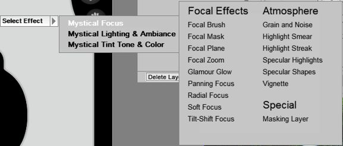
Эта категория имеет три группы эффектов: Focal Effects (Фокусные эффекты); Atmosphere (Атмосфера) и Special (Специальные).
Как только вы выберите любой конкретный эффект, как меню закроется и в левой части окна плагина появится диалоговое окно эффекта. Рассмотрим эффекты группы Focal Effects (Фокусные эффекты).
Важное примечание!
При рассмотрении какого-либо эффекта, я буду описывать элементы управления в окне плагина. Если эти элементы управления будут попадаться в других фильтрах, я уже останавливаться на их описании не буду, поэтому читать уроки придется по порядку, не пропуская. К тому же из-за их большого количества, возможно некоторые из эффектов я не буду описывать. Изучить их вы сможете самостоятельно
Эффект Focal Brush (Фокусная кисть).
После выбора этого эффекта, появится диалоговое окно фильтра (рис. 14). Давайте сначала рассмотрим те элементы управления, которые являются общими для большинства фильтров.
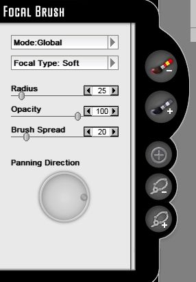
Первым таким элементом управления является раскрывающееся меню Mode (Режим) (рис. 15).
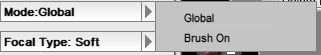
Для выбора одного из двух вариантов в этом меню, нужно щелкнуть на треугольнике в левой части меню и не отпуская левой кнопки мыши, указать нужный пункт. Здесь имеется два варианта режимов, в котором работает фильтр.
• Режим Global (Глобальный) – в этом режиме фильтр оказывает влияние на все изображение. Другими словами, эффект затрагивает изображение целиком.
• Режим Brush On (Кисть) – в этом режиме эффект затрагивает только те участки изображения, которые вы обработаете кистью. Об этом я расскажу ниже.
Независимо от выбранного режима, в окне фильтра доступны следующие элементы управления, которые также являются общими для многих фильтров:
«Набор кистей» Brush Off Focal Areas (Кисть исключающая фокусируемую область) и Brush On Focal Areas (Кисть включающая в фокусируемую область) (рис. 16).
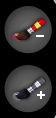
Примечание
Этот «набор кистей» встречается в различных фильтрах и категориях. И их название может отличаться в различных фильтрах. Но принцип их действия неизменен. Кисть Brush Off является аналогом инструмента Undo Brush (Отменить кисть) в Photo-Paint. Другими словами, обработав этой кистью часть изображения, вы отменяете в обработанной области действие эффекта. В противоположность этому, кисть Brush On действует подобно обычной кисти эффектов. Проще говоря, к обработанной кистью Brush On области изображения применяется соответствующий эффект.
• Кисть Brush Off Focal Areas (Кисть исключающая фокусируемую область) (рис. 17) отменяет действие эффекта в закрашиваемой области.
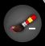
Данная кнопка может быть в двух режимах: активном и неактивном. Если вы выбрали этот инструмент (он активен), то она имеет вид, как на рисунке 17. Если инструмент в данный момент неактивен, то кнопка становится серой (рис. 18).
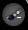
• Кисть Brush On Focal Areas (Кисть включающая в фокусируемую область) работает аналогично кисти Brush Off Focal Areas, но соответственно результат ее работы противоположен. К области изображения закрашенной этой кистью применяется эффект. Эта кнопка также имеет два режима: активный (рис. 19) и неактивный (рис. 20).
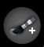
Теперь рассмотри группу элементов в окне плагина, которые также являются общими для всех категорий эффектов (рис. 21).
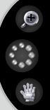
Эта группа инструментов находится в левой верхней части окна плагина. Назначение двух из них интуитивно понятно.
Первый инструмент – Zoom (Масштаб). Как видно из рисунка 21, он по умолчанию является неактивным и соответственно выглядит серым. При выборе данного инструмента, он изменяет свой цвет (рис. 22), что является визуальной подсказкой, что инструмент выбран.
Работа с этим инструментом такая же, как и в большинстве приложений. Щелчок этим инструментом в изображении, увеличивает масштаб. Чтобы уменьшить масштаб, необходимо щелкнуть этим инструментом при нажатой клавише Alt. Можно также воспользоваться знакомым способом, при нажатой кнопке мыши протащить инструментом (появится рамка ограничивающая интересующий вас участок изображения) в изображении. Для «дезактивации» инструмента, нужно щелкнуть по нему мышью еще раз.
Второй инструмент менее знаком пользователям, но также прост в использовании. Это инструмент Memory Dots (Точки запоминания) (рис. 23).
Назначение его весьма очевидно. Он создает скриншоты и запоминает их. Это чем-то напоминает инструмент Image Adjustment Lab (Лаборатория по корректировке изображений) в Photo-Paint, где можно сохранять промежуточные результаты с помощью кнопки Create Snapshot (Создать снимок). Плагин Mystical 2 запоминает текущее состояние изображения. После щелчка на маленьком кружочке, он меняет цвет, что означает, что для данного кружочка назначен скриншот. К сожалению, эти кружочки никак не нумеруются и не обозначаются каким-либо способом. Другими словами, вам нужно просто полагаться на свою память, чтобы запомнить, какой кружочек соответствует тому или иному состоянию изображения. Также изменение цвета кружочков незначительно. Они меняют свой цвет с серого на «стеклянный», т. е. становятся после активации более блестящими. Несмотря на эти недостатки, это весьма полезный инструмент, т. к. позволяет простым щелчком мыши вернуть изображение к конкретному состоянию.
И последний инструмент в этой группе – Pan (Панорама). Он в точности соответствует аналогичному инструменту в Photo-Paint. После щелчка на данном инструменте, он приобретает золотистый цвет. Чтобы отключить его, нужно еще раз щелкнуть по нему.
Перейдем к рассмотрению другой группы элементов управления, которая не является общей для многих фильтров, хотя встречается не так уж и редко (рис. 24).
Эта группа состоит из трех инструментов. Первый из них – Focal Center (Фокусный центр). Этот инструмент становится доступен, только когда в раскрывающемся меню Focal Type (Тип фокуса) выбран вариант Zoom (Масштаб) или Radial (Радиальный). Этот инструмент задает центральную точку, от которой и будет исходить эффект. По принципу действия, это похоже, как в фильтре Photo-Paint Zoom (Масштаб) из группы Blur (Размытость). Там также, эффект имеет центральную точку задаваемую пользователем.
Два других инструмента – Lasso-Off (Исключающее лассо) и Lasso-On (Включающее лассо). Легко догадаться, как работают эти два инструмента. Они работают по принципу инструмента Лассо в Photo-Paint. С помощью инструмента Lasso-On (Включающее лассо), вы выделяете область, к которой будет применен эффект, а с помощью Lasso-Off (Исключающее лассо) можно создать область, которая будет исключена, т. е. к выделенной области эффект применен не будет. И как вы теперь вероятно догадываетесь, при выборе инструмента, соответствующий ему значок изменят цвет, что соответствует активному состоянию.
Прежде, чем мы двинемся дальше, имеет смысл поговорить об этом фильтре в целом и рассмотреть коротенькие примеры.
Как следует из названия категории и самой группы эффектов, все они предназначены для одной цели – сфокусировать внимание зрителя на какой-то важной детали в изображении. Данный художественный прием широко используется в коллажировании и обработке фотографий.
Пример 1.
Т. к. мы рассмотрели еще все элементы управления, как в самом фильтре, так и в плагине, то посмотрим, что мы сможем сделать обходясь минимумом инструментов.
На рис. 25 представлено исходное фото (уменьшенное).
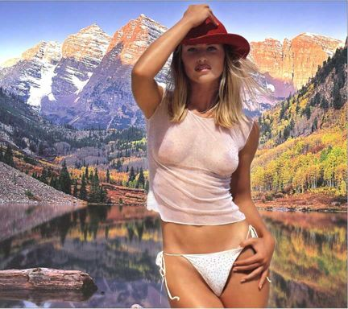
Вызовем окно плагина: Effects > Auto FX Software (Эффекты > Auto FX Software). В окне плагина выберем эффект Focal Brush (Фокусная кисть): Select Effect > Mystical Focus > Focal Brush (Выбрать эффект > Мистический фокус > Фокусная кисть). Оставим пока значения всех параметров по умолчанию. Получим результат, как на рис. 26.
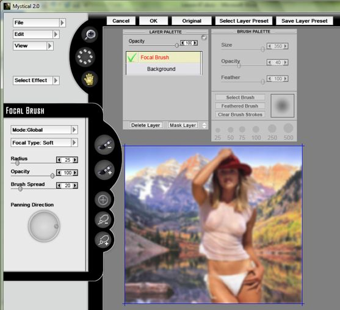
Первое неудобство, с которым вы можете столкнуться, это перекрытие окнами Layer Palette (Палитра слоев) и Brush Palette (Палитра кистей) части изображения. Поэтому я отбуксировал изображение с помощью инструмента Pan (Панорама) в нижнюю часть окна плагина. Скриншот довольно сильно уменьшен, но тем не менее, на рис. 26 видно, что этот эффект попросту размыл изображение. По закону жанра, как минимум лицо девушки должно быть отчетливым, а фон должен быть размыт.
Давайте восстановим исходный вид лица. Как я описывал ранее, для отмены действия фильтра в какой-то части изображения, можно воспользоваться инструментом Brush Off Focal Areas (Кисть исключающая фокусируемую область). Все что требуется сделать, это обработать кистью лицо. Но как только вы активизируете этот инструмент, то увидите, что размер кисти по умолчанию просто огромен. Уменьшить размер можно с помощью ползунка Size (Размер), в окне Brush Palette (Палитра кистей) (рис. 27). Более тесно с этим окном мы познакомимся позже.
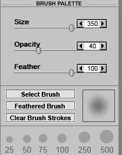
На рисунке видно, что по умолчанию размер равен 350. Размер стоит уменьшить примерно до 150 и закрасить участок изображения (рис. 28).
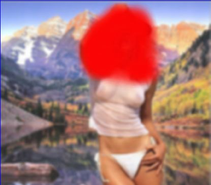
Закрашиваемая область становится красной. Есть один нюанс в этой процедуре. Закрашивать нужно не отпуская левую кнопку мыши (желательно). Как только вы отпустите кнопку мыши, Auto Fx решит, что вы закончили действие и перерисует изображение. Потом придется «дозакрашивать» нужные области. Конечно, не всегда можно сразу удачно обработать кистью требуемый участок, но не стоит забывать, что удобней обработать кистью нужный участок изображения за один раз.
После обработки кистью, Auto Fx перерисует изображение и мы получим результат, как на рис. 29.
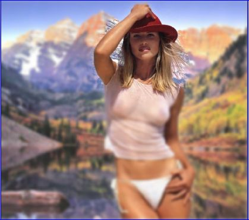
Хотя скриншот сделан с миниатюры в окне плагина, тем не менее, видно, что лицу была возвращена прежняя четкость.
Теперь осталось щелкнуть в верхней части окна плагина кнопку ОК. Окно плагина закроется и вы вернетесь обратно в Photo-Paint. На рис. 30 показана верхняя часть изображения.
На рисунке видно, что окружающий фон размыт, а лицо девушки осталось без изменения. Т. к. в данном примере, мы не стремились получить исключительно точный результат, то вокруг головы часть фона также вернулась в исходное состояние. Обычно такая задача не ставится и нам было бы необходимо фон оставить размытым, но в этом примере не ставилась цель получить качественный результат. Мы лишь рассмотрели работу фильтра в целом и использование инструмента Brush Off Focal Areas (Кисть исключающая фокусируемую область).
Теперь рассмотрим более подробно выпадающее меню Focal Type (Тип фокуса) (рис. 31).
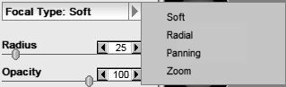
Здесь имеется четыре типа фокусирования:
• Soft (Смягчение) – равномерно размывает изображение. Действие этого типа фокусирования схоже с размытием по Гауссу.
• Radial (Радиальный) – размывает изображение в радиальном направлении. Действие аналогично фильтру Radial Blur (Радиальная размытость) в Photo-Paint.
• Panning (Панорамирование) – размывает изображение в определенном направлении. По действию, эффект напоминает Motion Blur (Размытость движением) в Photo-Paint.
• Zoom (Масштаб) – размывает изображение в радиальном направлении от центральной точки. По действию имеет сходство с одноименным фильтром в Photo-Paint.
Теперь мы можем приступить к рассмотрению элементов управления самого фильтра (см. рис. 14).
Ползунок Radius (Радиус) – определяет силу эффекта. При больших значениях этого параметра, эффект проявляется сильнее (рис. 32).
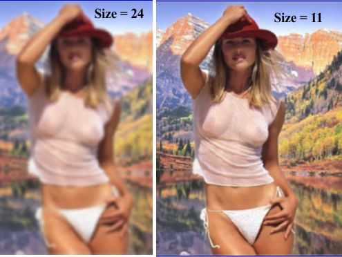
Ползунок Opacity (Непрозрачность) – задает прозрачность эффекта. Естественно, в случае уменьшения значения этого параметра, эффект становится менее заметен. При установке значения Opacity = 0, эффект станет незаметен.
Ползунок Brush Spread (Разброс кисти) – этот параметр оказывает влияние на размер области затрагиваемой эффектом. Например, при меньших значениях параметра, область размытия меньше, но зато само размытие более заметно. При высоких значениях параметра, размытие становится более «мягким» и менее заметным, но область размытия становится больше.
И наконец, последний элемент управления в этом фильтре – Panning Direction (Направление панорамирования). Этот интерактивный элемент управления задает направление размытия. Он становится доступным при выборе в меню Focal Type (Тип фокуса) варианта Panning (Панорамирование).
Если вы потратите буквально несколько минут на изучение влияния этих элементов управления, вы без труда увидите их действие.
Теперь рассмотрим общее для всех фильтров окно Brush Palette (Палитра кистей) (см. выше рис. 27).
Что касается ползунков, то тут все понятно без слов. Рассмотрим их вкратце:
• Ползунок Size (Размер) – задает размер кисти.
• Ползунок Opacity (Непрозрачность) – задает непрозрачность кисти. Этот же параметр в определенной мере определяет и степень проявления эффекта.
• Ползунок Feather (Размытие) – определяет мягкость кисти.
В нижней части окна расположены три кнопки и стандартные заготовки типов кисти (рис. 33).
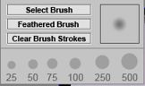
Правее этих кнопок находится миниатюрное окошко предварительного просмотра выбранной кисти. Чтобы быстро выбрать стандартную кисть, достаточно щелкнуть на образце в нижней части окна Brush Palette (Палитра кистей). Здесь имеется шесть заготовок кистей.
Кнопка Select Brush (Выбрать кисть) предоставляет доступ к обширной библиотеке кистей. Щелчок на этой кнопке открывает диалоговое окно Mask Brush (Маска кисти) (рис. 34).
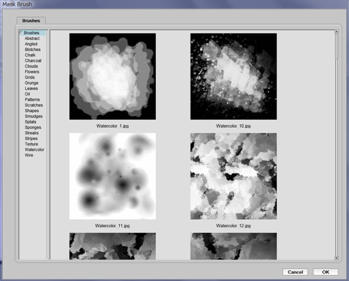
В списке категорий кистей Brushes (Кисти), в правой части окна, можно выбрать категорию, а в окне предварительного просмотра слева, выбрать нужную заготовку кисти, щелкнуть на ней мышью и затем на кнопке ОК.
Кнопка Feathered Brush (Мягкая кисть) возвращает кончик кисти в стандартное состояние. Т. е. кисть становится обычной круглой формы.
Кнопка Clear Brush Strokes (Очистить мазки кисти) отменяет все изменения сделанные в изображении с помощью кисти.
На этом я закончу первый урок. В следующем уроке мы продолжим знакомство с эффектами группы Focal Effects (Фокусные эффекты), а заодно продолжим знакомство с элементами управления, которые являются общими для всех фильтров.
")
")